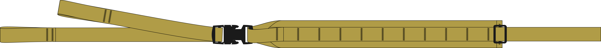
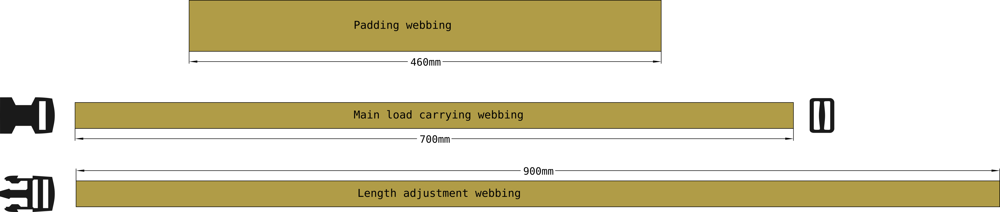
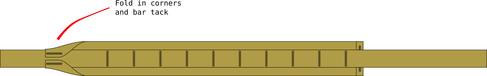

Shoulder harness, unpadded, with quick-release#
A pair of shoulder straps I originally made for use while nordic skating (ice skating on sea ice).
Notable features:
Made from only webbing and buckles to dry fast if soaked in sea water after falling through the ice
ITW nexux side-relase buckles instead of a typical adjustment buckles make the backpack is easy to take of while in the water after falling through ice. Just open the side release buckles to get the pack off your back.
top intended to attach to a D-ring on the pack using a tri-glide buckle
Two pairs of finished shoulder straps. One with Quick release and the other with a conventional adjustment buckle:

Sewing pattern#
The full .svg vector drawing of the sewing pattern is available here: shoulder strap, 50mm webbing
{kind=link}
Materials#
Material for one shoulder strap. You’ll need double to make a pair.
material |
amount |
|---|---|
webbing, 50mm |
46 cm |
webbing, 25mm |
1.6 meter |
tri-glide, 25mm |
1 pcs |
side release buckle, plug |
1 pcs |
side release buckle, receptacle |
1 pcs |
The side-release buckles are optional. You can change the plug-receptacle pair to a conventional adjustment buckle.

Cut pattern#
Cut the webbing to length according to the pattern.
3 pieces total.
melt the cut ends to stop fraying

Construction#
Start by assembling the main load carrying webbing and padding webbing. Set the length adjustment webbing aside for now
Finish right end of the padding webbing
make a fold 1 cm away from the end
make a bar tack parallel to the fold to make the fold permanent
attach the load bearing webbing to the padding
make a bar tack 1 inch away from the folded edge of the padding

Sew in all but one of the Sewing PALS bar tacks
to get uniform tension, start form the right end, and work your way toward the left one PALS loop at a time
leave space in the left end to secure the adjustment buckle
PALS bar tacks are spaced 1.5 inches apart
 4. Taper down the left end of the padding webbing.
- fold the padding lenghtwise as close to the load bearing webbing as possible
- use clips to keep the padding folded while sewing
- make a bar tack parallel to the webbing to keep the corner down.
- this step is optional, but I don’t like the padding corners protruding
4. Taper down the left end of the padding webbing.
- fold the padding lenghtwise as close to the load bearing webbing as possible
- use clips to keep the padding folded while sewing
- make a bar tack parallel to the webbing to keep the corner down.
- this step is optional, but I don’t like the padding corners protruding

Thread the side-release buckle receptacle onto the end of the load bearing webbing
fold the remaining end of the load bearing webbing back onto itself
Secure the buckle and close the loop with a bar tack
this is also serves the purpose of the last bar tack of the PALS loops
thread the tri-gilde buckle onto the

Length adjustment webbing#
Set the finished assembly aside and work on the length adjustment webbing. Shoulder length adjustment webbing is simply a length of webbing with 10cm long loops at both ends. It is attached either to the external frame of a pack, a D-ring, or other suitable attachment point on a pack
at both ends, make a fold 10 cm from the end
make the folds into loops with two parallel bar tacks
thread the side-release buckle onto the webbing
Usage#
On packs with D-ring attachment points
Compatible modules#
You may want to combine this with:
sternum strap, 20mm, modular fits to this shoulder harness
backpack, daypack, large is designed to use these as one shoulder harness option
[backpack, small, rolltop, utility shoulder strap](../backpack, small, rolltop, utility shoulder strap.svg) can be attached, although it was not originally designed to do so
Quick release for nordic skating#
Carrying a backpack with rescue equipment and dry clothes is essential for nordic skating. The dry clothes are for when the ice breaks, and you inadvertently end up going for a swim in zero degree water. As you should be expecting to swim, the dry clothes should be in a watertight drybag. The drybag has a secodary purpose as well: to keep the pack floating in the water.